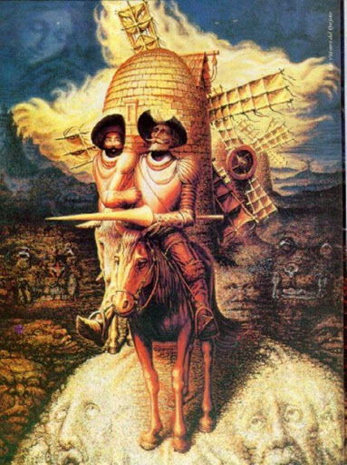

El héroe y protagonista principal de la novela, también conocido como el mejor caballero andante de todos los tiempos. Como un hidalgo que vive con su tía y sobrina, decide echarse la aventura de ser un caballero andante, con la intención de revivir las virtudes y los valores caballerescos. Es alto, viejo, y delgado y va con su armadura puesta y ensillado encima de su caballo Rocinante, con ansias de un día, volver con su amada Dulcinea del Toboso. Su locura es tan admirable como su inteligencia y determinación.
